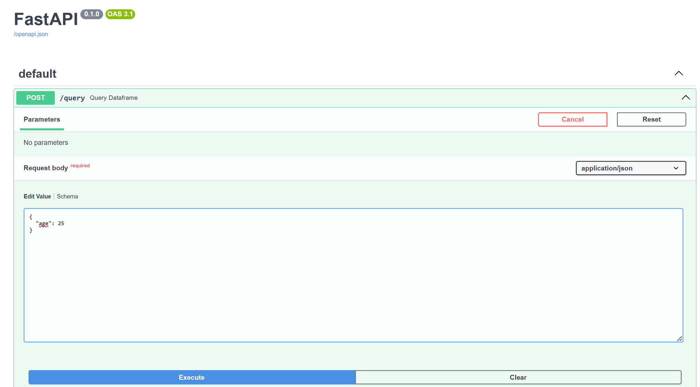
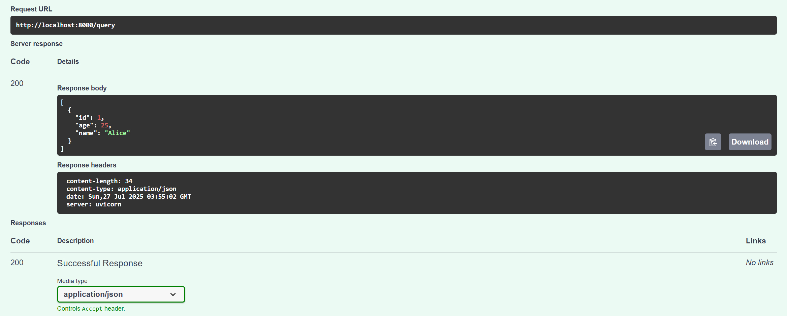
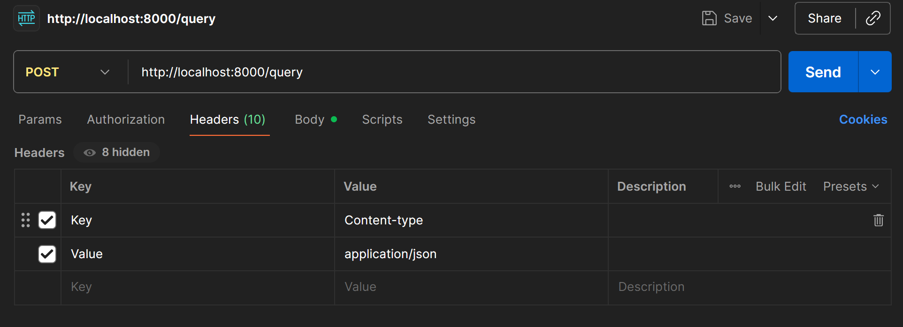
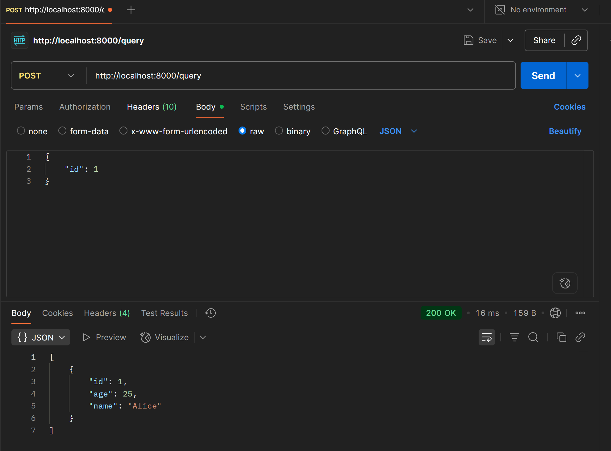

1. Serving data#
1.1. API#
Bên cạnh các cách cung cấp dữ liệu truyền thống dạng bảng hoặc file, ta có thể cung cấp dữ liệu hỗ trợ API như sau:
Tạo server app hỗ trợ serving API với
uvicorn&fastapiSử dụng và khai thác dữ liệu qua API
1.1.1. Tạo API#
Bước 1: Tạo file main_data_api.py
from fastapi import FastAPI, HTTPException, Body
from typing import Dict, Any
import polars as pl
#%%
df = pl.DataFrame({
"id" : [1, 2, 3, 4],
"age" : [25, 30, 35, 40],
"name": ["Alice", "Bob", "Charlie", "David"]
})
#%%
app = FastAPI()
#%%
# %%
@app.post("/query")
def query_dataframe(filters: Dict[str, Any] = Body(...)):
result = df
for key, value in filters.items():
if key not in df.columns:
raise HTTPException(status_code=400, detail=f"Column '{key}' not found.")
# For string filtering, use case-insensitive contains
if isinstance(value, str):
result = result.filter(pl.col(key).str.contains(value, case=False))
else:
result = result.filter(pl.col(key) == value)
return result.to_dicts()
Bước 2: Run API
uvicorn main_data_api:app --reload
1.1.2. Khai thác API#
Sau khi thực hiện xong, ta có thể khai thác và truy cập API, test thử với swagger tại server như sau
Truy cập vào local:
localhost:8000/docsTest thử dữ liệu

Kết quả trả ra như sau

Ta cũng có thể khai thác với postman với Headers & Body như sau


Với terminal
curl -X POST http://127.0.0.1:8000/query \
-H "Content-Type: application/json" \
-d '{"id": 1}'